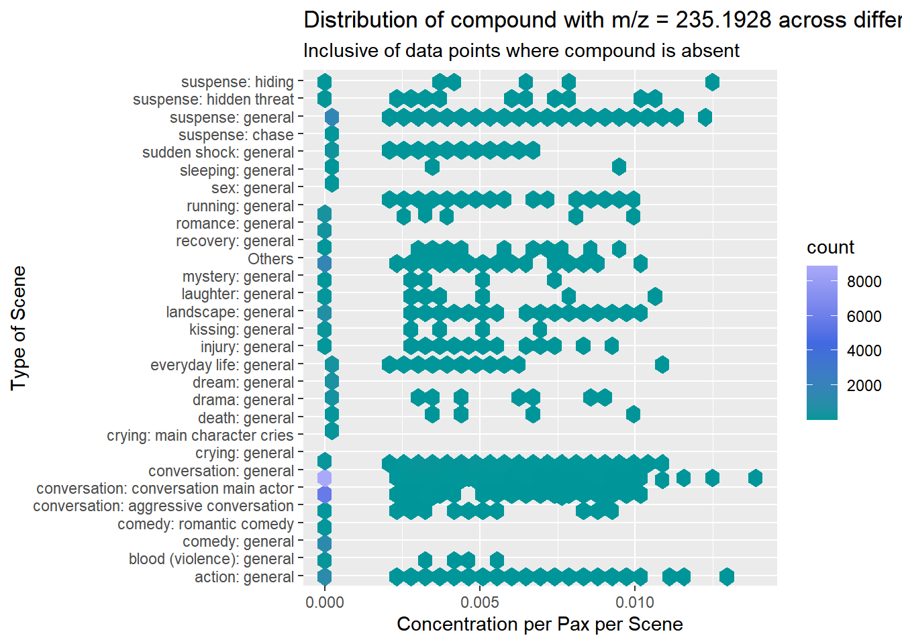
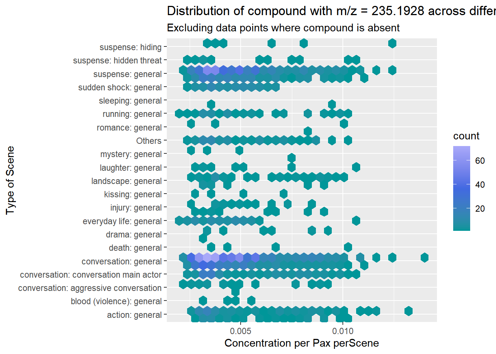
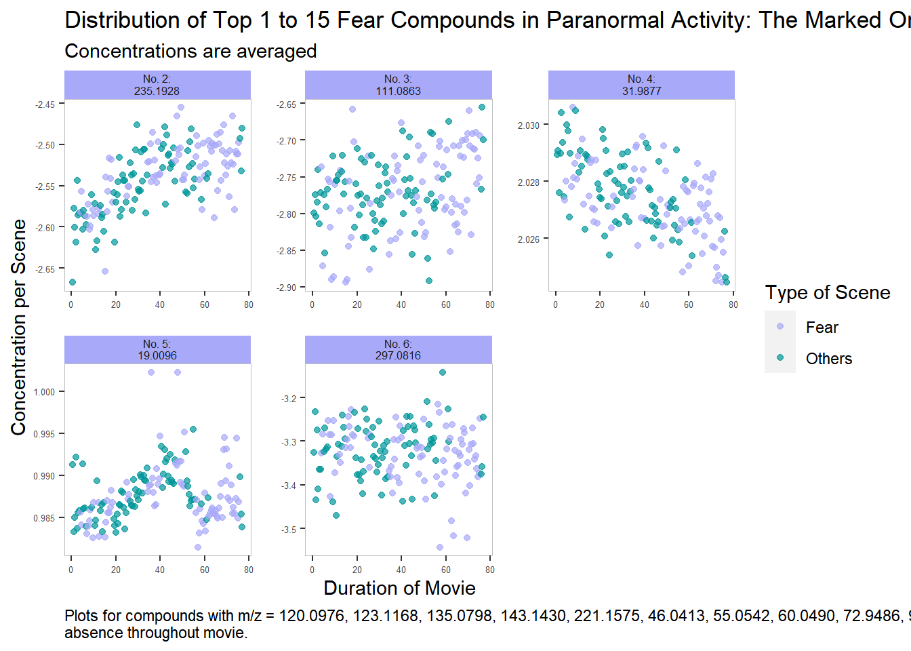
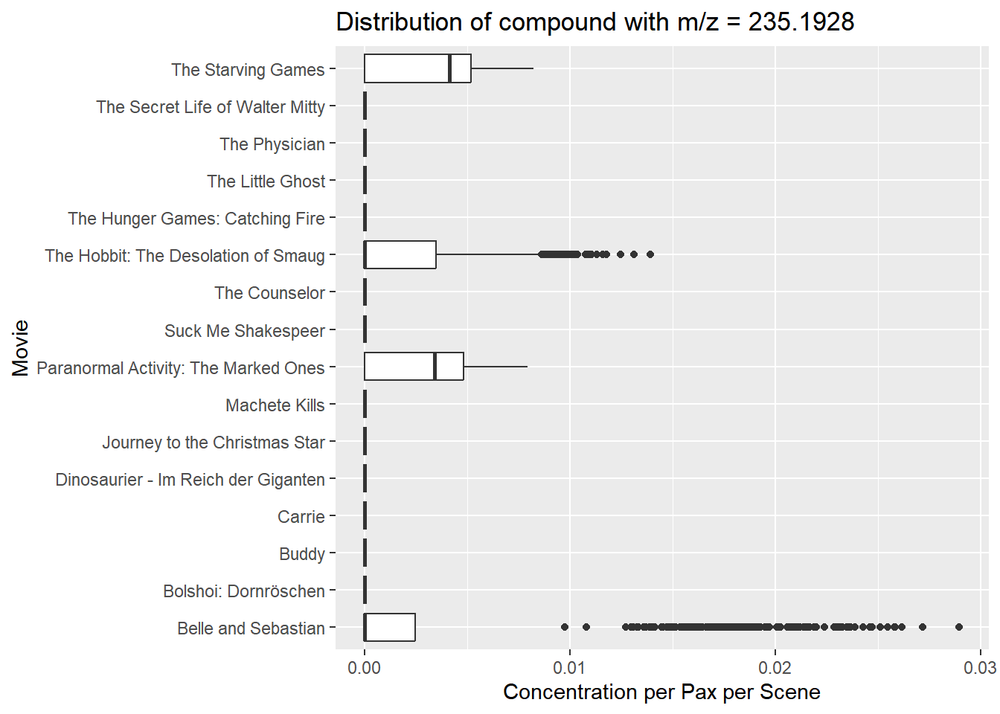
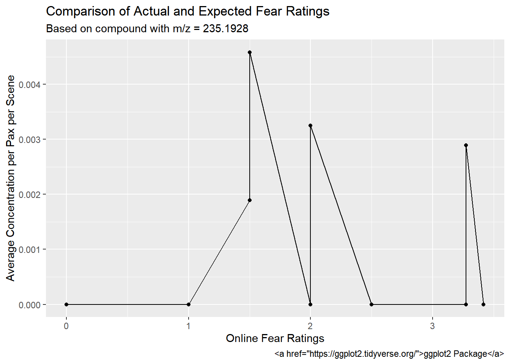
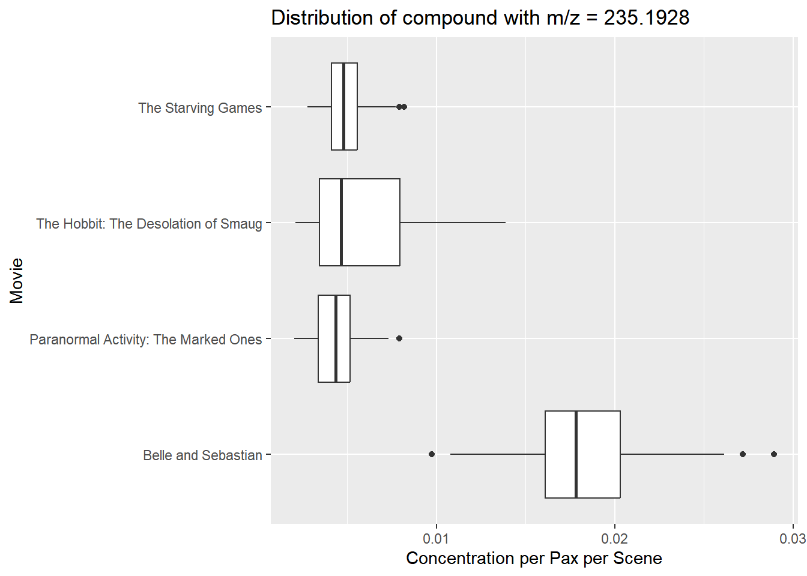

Warning: package 'forcats' was built under R version 4.3.2
── Attaching core tidyverse packages ──────────────────────── tidyverse 2.0.0 ──
✔ dplyr 1.1.3 ✔ readr 2.1.4
✔ forcats 1.0.0 ✔ stringr 1.5.0
✔ ggplot2 3.4.4 ✔ tibble 3.2.1
✔ lubridate 1.9.3 ✔ tidyr 1.3.0
✔ purrr 1.0.2
── Conflicts ────────────────────────────────────────── tidyverse_conflicts() ──
✖ dplyr::filter() masks stats::filter()
✖ dplyr::lag() masks stats::lag()
ℹ Use the conflicted package (<http://conflicted.r-lib.org/>) to force all conflicts to become errors
library(ggplot2)library(gsignal)
Warning: package 'gsignal' was built under R version 4.3.2
Attaching package: 'gsignal'
The following object is masked from 'package:lubridate':
dst
The following object is masked from 'package:dplyr':
filter
The following objects are masked from 'package:stats':
filter, gaussian, poly
Rows: 23664 Columns: 433
── Column specification ────────────────────────────────────────────────────────
Delimiter: ","
chr (3): Time, movie, label
dbl (430): CO2, 14.0028, 15.0238, 15.9962, 16.0201, 17.0260, 18.0338, 18.992...
ℹ Use `spec()` to retrieve the full column specification for this data.
ℹ Specify the column types or set `show_col_types = FALSE` to quiet this message.
Rows: 109 Columns: 10
── Column specification ────────────────────────────────────────────────────────
Delimiter: ","
chr (2): scheduled, movie
dbl (8): number.visitors, filled.., screening.room, capacity, minutes, lag_m...
ℹ Use `spec()` to retrieve the full column specification for this data.
ℹ Specify the column types or set `show_col_types = FALSE` to quiet this message.
# Set factor for Time Column to scale with actual timems_data$Time <-factor(ms_data$Time, levels=unique(ms_data$Time))ms_data <- ms_data %>% dplyr::filter(!is.na(label) | (is.na(label) &!grepl(paste(labelled_movies, collapse="|"), movie))) %>%group_by(movie_F_ind) %>%#To add a counter common to movie duplicatesmutate(counter =row_number(movie_F_ind)) %>%#To compile all cmpds in 1 columnpivot_longer(cols =matches("^\\d"),names_to ="cmpd",values_to ="conc" ) %>%#To correct for noise in baseline + Conc per paxmutate(conc=if_else(conc<0|is.na(conc), 0,conc),conc_perpax = conc/screen_times$number.visitors[movie_F_ind]) %>%ungroup()# Labelled ms_data (Only 6 diff movies)labelled_ms <- ms_data %>% dplyr::filter(!is.na(label))tidied_labelled_ms <- labelled_ms %>%#To separate labelsseparate_longer_delim(cols = label,delim ="; " ) %>%#To categorise fear and non-fear labelsmutate(is.fear =if_else(grepl("death|suspense|horror|murder|aggressive|violence|shock",label), "Fear","Others")) #(TODO: SHINY SELECT WHAT's FEAR)# Unlabelled ms_data (Excluding the buffer time before labelled movies start)unlabelled_ms <- ms_data %>% dplyr::filter(is.na(label))
# Graph 1# A segmented bar plot of compound concentrations against compound mass labels. Bar plots will be segmented by total % concentration under each fear label. This will allow us to observe which compounds are most commonly present when in fear. Based on the observations, a narrowed list of compounds will be analysed in the later graphs (List A)#Chosen Colour Palette (TODO)colour_palette <-c("#a9a9f9","#009699","red","orange","yellow","green")colour_gradient <-c("#009699","royalblue","#a9a9f9") #Low to high conccolour_bkg <-c("#a9a9f9","#009699") #contrasting w each other and w palette#Scenes were double-counted if fell under both fear and non-fear scene labelsgraph_1 <- tidied_labelled_ms %>%#To introduce %group_by(cmpd) %>%mutate(Tconc =sum(conc)) %>%group_by(cmpd,is.fear) %>%mutate(fraction =sum(conc)/Tconc) %>%distinct(cmpd,is.fear,fraction) %>%arrange(is.fear, desc(fraction))#For later stufffear_cmpd_ranked <- graph_1$cmpd[1:(length(graph_1$cmpd)/2)]#For user input in shiny (TODO) start_rank <-1end_rank <-25select_to_plot_1 <- graph_1[c(start_rank:end_rank, (length(graph_1$cmpd)-start_rank+1):(length(graph_1$cmpd)-end_rank+1)),]select_to_plot_1 %>%group_by(is.fear) %>%mutate(cmpd =fct_reorder(cmpd, fraction)) %>%ggplot(aes(y = cmpd, x = fraction, fill =fct_reorder(is.fear, -fraction))) +geom_col() +labs(title =paste("Top",start_rank,"to",end_rank,"Most Frequently Emitted Compounds when in Fear"),subtitle ="Identified by distribution across different types of scenes",y ="m/z of Compound", x ="Fraction of the Total Concentration", fill ="Type of Scene") +scale_fill_manual(values=colour_palette)
# Graph 2 (Changed from bar to hex)# A bar graph displaying the total concentration of a specific chosen compound under each scene label. This will give a clearer idea of the distribution of the selected compound across different types of scenes. This will only be for compounds in List A.#DOUBLE-COUNTING#MORE SHINY TASKS: Add info about bin when hover over hex (TODO)#For user input in Shiny (TODO)user_cmpd_2 <-"60.0490"user_cmpd_2 <-"235.1928"#with 0 --> Highlights that be at 0 and relatively same amount of time (Due to vagueness of scene labels)tidied_labelled_ms %>% dplyr::filter(cmpd == user_cmpd_2) %>%ggplot(aes(x=conc_perpax, y=label)) +geom_hex() +labs(title =paste("Distribution of compound with m/z =",user_cmpd_2,"across different scenes"),subtitle ="Inclusive of data points where compound is absent",y ="Type of Scene", x ="Concentration per Pax per Scene") +scale_fill_gradientn(colours = colour_gradient)

#without 0 points --> For better idea of distributiontidied_labelled_ms %>% dplyr::filter(cmpd == user_cmpd_2, conc>0) %>%ggplot(aes(x=conc_perpax, y=label)) +geom_hex() +labs(title =paste("Distribution of compound with m/z =",user_cmpd_2,"across different scenes"),subtitle ="Excluding data points where compound is absent",y ="Type of Scene", x ="Concentration per Pax perScene") +scale_fill_gradientn(colours = colour_gradient)

# Graph 3 #REMOVE? USELESS# Multiple box plots will be plot to display the distribution of a compound's concentration under different scene labels. This will give a clearer idea of the distribution of concentrations, instead of just the total concentration across all similar scenes. This will only be for compounds in List A.
# Graph 4 (now 3) *Prioritised Fear labels# A line graph for the concentration of a chosen compound against time. The time will reflect the duration into a movie. Meanwhile, the list of compounds is once again restricted to List A. Multiple graphs will be either faceted or overlaid to observe the trend for the different compounds in the same movie. Scenes/Points with fear labels will be highlighted.# Other Shiny (TODO): Hover over facet for a zoom in (Show plot alone)#For user input in Shiny (TODO)user_movie_3 <-"Paranormal Activity: The Marked Ones"user_top_cmpd_3 <-1#A range selected by useruser_bottom_cmpd_3 <-15user_count_cmpd_3 <- user_bottom_cmpd_3 - user_top_cmpd_3 +1#Vector of selected compoundsselected_cmpd_3 <- fear_cmpd_ranked[user_top_cmpd_3:user_bottom_cmpd_3]graph_3 <- tidied_labelled_ms %>%arrange(is.fear) %>%distinct(Time, cmpd, .keep_all =TRUE) %>%#To remove expanded labelsarrange(counter, cmpd) %>% dplyr::filter(cmpd %in% selected_cmpd_3) %>%#Select top cmpd dplyr::filter(movie==user_movie_3) %>%#Select 1 moviegroup_by(counter,cmpd) %>%#To add an ave conc common to similar moviesmutate(average =mean(conc_perpax)) %>%ungroup()# Set a list of cmpd to remove (Complete Absence)removed_cmpd <- graph_3 %>%pivot_wider(names_from ="cmpd",values_from ="conc",id_cols="Time") %>%select_if(function(x){all(x==0) &is.numeric(x)}) %>%colnames()if(length(removed_cmpd) !=0){ graph_3 <- graph_3 %>% dplyr::filter(!cmpd %in% removed_cmpd)}final_graph_3 <- graph_3 %>%transform(cmpd=factor(cmpd, levels=selected_cmpd_3)) %>%arrange(cmpd) %>%#To look at only 1 movie durationdistinct(counter, cmpd, .keep_all =TRUE) # Plotif(length(final_graph_3$cmpd) !=0){ final_graph_3 %>%#NOTE: IF PLOT CONC, A FEW COMPLETE ABSENCEggplot(aes(x=counter/2, y=log10(average), colour=is.fear)) +geom_point(alpha=0.7) +facet_wrap(~ cmpd, ncol =ceiling(sqrt(user_count_cmpd_3-length(removed_cmpd))), scales="free", labeller =as_labeller(~paste0("No. ", user_top_cmpd_3 +which(selected_cmpd_3 %in% .x) -1,":\n", .x))) +labs(title =paste("Distribution of Top", user_top_cmpd_3, "to", user_bottom_cmpd_3, "Fear Compounds in", user_movie_3),subtitle ="Concentrations are averaged",y ="Concentration per Scene", x ="Duration of Movie",caption =str_wrap(if_else(length(removed_cmpd) !=0, paste(if_else(length(removed_cmpd)>1, "Plots", "Plot"),"for",if_else(length(removed_cmpd)>1, "compounds", "compound"),"with m/z =",paste(removed_cmpd, collapse=", "), if_else(length(removed_cmpd)>1, "have", "has"),"been removed due to absence throughout movie."),NA), 150),color ="Type of Scene" ) +theme(axis.text.y =element_text(size=5),axis.text.x =element_text(size=5),strip.text =element_text(size=6, margin=margin(t=1,b=2)),strip.background.x =element_rect(fill=colour_palette),panel.spacing =unit(1, "lines"),panel.background =element_blank(),panel.border =element_rect(fill =NA, linewidth =0.1, color ="grey"),plot.caption =element_text(hjust=0)) +scale_color_manual(values = colour_palette)} else{print("All compounds selected were absent throughout the movie selected.")}

# Graph 5 (now 4)# For a chosen compound, different screenings of the same movie are selected and the concentration of that compound against time is plot and overlaid for the different screenings. These screenings will be selected according to a criteria set by the user, such that the other variables for those screenings are relatively similar. This allows us to observe for any trends between the compound emission and factors such as the time of day, type of fear, and the influence of people.# Hover for zoom in of that specific screening plot (TODO)# Selection of screenings to focus on (TODO)# https://stackoverflow.com/questions/42259826/hyperlinking-text-in-a-ggplot2-visualization (CONSIDER)#For user input in Shiny (TODO)user_movie_4 <-"Paranormal Activity: The Marked Ones"user_cmpd_4 <-"19.0096"#A range selected by usergraph_4 <- tidied_labelled_ms %>%arrange(is.fear) %>%distinct(Time, cmpd, .keep_all =TRUE) %>%#To remove expanded labelsarrange(counter, cmpd) %>% dplyr::filter(cmpd == user_cmpd_4) %>%#Select top cmpd dplyr::filter(movie==user_movie_4) %>%#Select 1 moviemutate(movie_F_ind =fct_reorder2(as.character(movie_F_ind), counter, conc_perpax)) %>%arrange(movie_F_ind) # FOR SCREENING SELECTION (TODO)# %>% dplyr::filter(movie_F_ind %in% c(99,100)) Others_4 <- graph_4 %>%mutate(conc_perpax=(max(conc_perpax)+min(conc_perpax))/2) %>% dplyr::filter(is.fear =="Others", movie_F_ind==graph_4$movie_F_ind[1])Fear_4 <- graph_4 %>%mutate(conc_perpax=(max(conc_perpax)+min(conc_perpax))/2) %>% dplyr::filter(is.fear =="Fear", movie_F_ind==graph_4$movie_F_ind[1])graph_4 %>%#NOTE: IF PLOT CONC, A FEW COMPLETE ABSENCEggplot(aes(x=counter/2, y=conc_perpax)) +geom_tile(data = Fear_4,height=max(graph_4$conc_perpax)-min(graph_4$conc_perpax)+2,aes(fill="Fear"),linetype=0,alpha=0.3) +geom_tile(data = Others_4, height=max(graph_4$conc_perpax)-min(graph_4$conc_perpax)+2, aes(fill="Others"),linetype=0,alpha=0.1) +geom_line(aes(group = movie_F_ind, color = movie_F_ind)) +labs(title =paste("Distribution of compound with m/z =", user_cmpd_4, "across duration of", user_movie_4),subtitle ="Each screening is represented by a line graph.",y ="Concentration per Scene", x ="Duration of Movie (min)",color ="Screening",fill ="Type of Scene") +theme(panel.background =element_blank()) +scale_fill_manual(values = colour_bkg) +scale_color_manual(values = colour_palette, labels=LETTERS) +scale_x_continuous(expand =c(0, 0)) +scale_y_continuous(expand =c(0, 0))
# No. of people, Time of day, Date (Maybe got spoilers so less scared haha)
# Graph 6 (now 5)# For the top fear compounds determined, their average emission will be tabulated for different movies, throughout the movie and across multiple screenings. This emission intensity will be plot against the online fear ratings for these movies to give an idea of whether the online ratings are an accurate reflection of our chemical reflection, vice versa.#TODO: Update!Final_fear_cmpd_ranked <- fear_cmpd_ranked#Fear Type A: Identified w cmpd Auser_cmpd_5 <-"235.1928"#SELECT from really narrowed few (TODO)graph_5a <- ms_data %>% dplyr::filter(cmpd == user_cmpd_5)graph_5a %>%ggplot(aes(x = conc_perpax, y = movie)) +geom_boxplot() +labs(x ="Concentration per Pax per Scene", y ="Movie",title =paste("Distribution of compound with m/z =", user_cmpd_5))

graph_5b <- ms_data %>%group_by(cmpd,movie) %>%mutate(overall_ave_conc_perpax =mean(conc_perpax)) %>%distinct(cmpd, movie, overall_ave_conc_perpax, .keep_all =TRUE) %>% dplyr::filter(cmpd == user_cmpd_5) %>%mutate(fear_rating = screen_times$fear_rating[movie_F_ind])graph_5b %>%ggplot(aes(x = fear_rating, y = overall_ave_conc_perpax)) +geom_point() +geom_line() +labs(x ="Online Fear Ratings",y ="Average Concentration per Pax per Scene",title ="Comparison of Actual and Expected Fear Ratings", subtitle =paste("Based on compound with m/z =",user_cmpd_5), #caption = "Fear ratings are an average of rating obtained from Reel Scary and Common Sense Media",caption=a("ggplot2 Package", href ="https://ggplot2.tidyverse.org/"))library(grid)## Force 'grid' grobs from 'ggplot2' plotgrid.force()## List all grobs in plotgrid.ls()
## Find the grobs representing the text labels on the axestickLabels <-grid.grep("axis::text", grep=TRUE, global=TRUE)## Check which one is the y-axislapply(tickLabels, function(x) grid.get(x)$label)
[[1]]
[1] "Online Fear Ratings"
[[2]]
[1] "Average Concentration per Pax per Scene"
## Add hyperlinks to the axis tick labelslibrary(gridSVG)
Warning: package 'gridSVG' was built under R version 4.3.2
Attaching package: 'gridSVG'
The following objects are masked from 'package:grid':
linearGradient, pattern, radialGradient
The following object is masked from 'package:grDevices':
dev.off
grid.hyperlink(tickLabels[[1]],href="https://ggplot2.tidyverse.org/",group=FALSE)## Export to SVG (and view in a browser)grid.export("linked-plot.svg")

#without 0 values ?(TBC)graph_5c <- graph_5a %>% dplyr::filter(conc>0)graph_5c %>%ggplot(aes(x = conc_perpax, y = movie)) +geom_boxplot() +labs(x ="Concentration per Pax per Scene", y ="Movie",title =paste("Distribution of compound with m/z =", user_cmpd_5))

Old Graphs/Code
#Graph 2 average values --> Did not work out since lots of 0graph_2 <- tidied_labelled_ms %>%#To ave conc per scene dplyr::filter(cmpd == user_cmpd_2) %>%group_by(label) %>%mutate(average =mean(conc)) %>%distinct(label,average, cmpd) %>%arrange(desc(average))graph_2 %>%ggplot(aes(y = average, x = label)) +geom_col() +labs(title =paste("Distribution of Compound of m/z =",user_cmpd_2,"across different scene labels"),subtitle ="For scenes with more than 1 label assigned, concentrations were double-counted",y ="Average Concentration per Scene", x ="Type of Scene") +scale_x_discrete(guide=guide_axis(angle=90))